CREATING A CIRCUIT SCHEMATIC
To create a new circuit start from an empty window, run xschem and select New in the File menu. Suppose we want co create a NAND gate, with two inputs, A and B and one output, Z. Lets start placing the input and output schematic pins; use the Insert key and locate the devices/ipin.sym symbol. After placing it change its lab attribute to 'A'
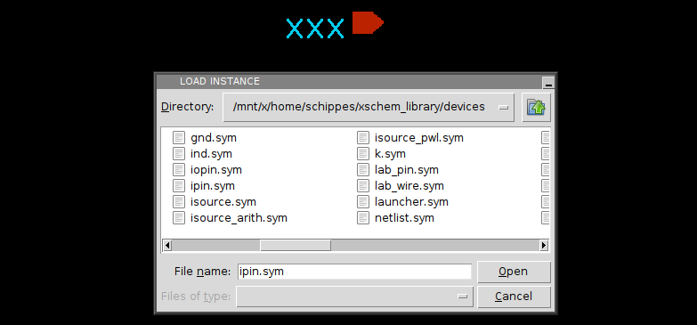Copy another instance of it and set its lab attribute to B. Next place an output pin devices/opin.sym and set its lab to Z. The result will be as follows:
Now we need to build the actual circuit. Since we plan to do it in CMOS technology we need nmos and pmos transistors. Place one nmos from devices/nmos4.sym and one pmos from devices/pmos4.sym By selecting them with the mouse, moving (m bindkey), copying ('c' bindkey) place 4 transistors in the following way (the upper ones are pmos4, the lower ones nmos4):
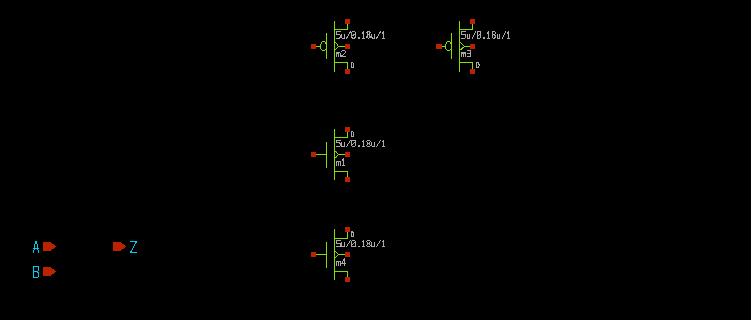now draw wires to connect together the transistor to form a NAND gate; in the picture i have highlighted 2 electrical nodes by selecting one wire segment of each and pressing the 'k' bindkey.
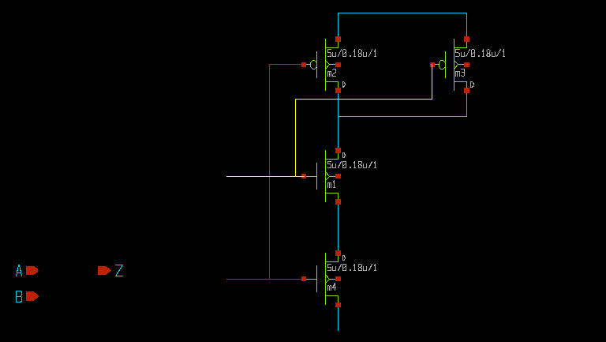Next we need to place the supply nodes , VCC and VSS. we decide to use global nodes. Global nodes in SPICE semantics are like global variables in C programs, they are available everywhere, we do not need to propagate global nodes with pins. We could equally well use regular pins , as used for the A and B inputs, I am just showing different design styles. Use the Insert key and place both devices/vdd.sym and devices/gnd.sym Since the default names are respectively VDD and GND use the edit property bindkey 'q' to change these to VCC and VSS.
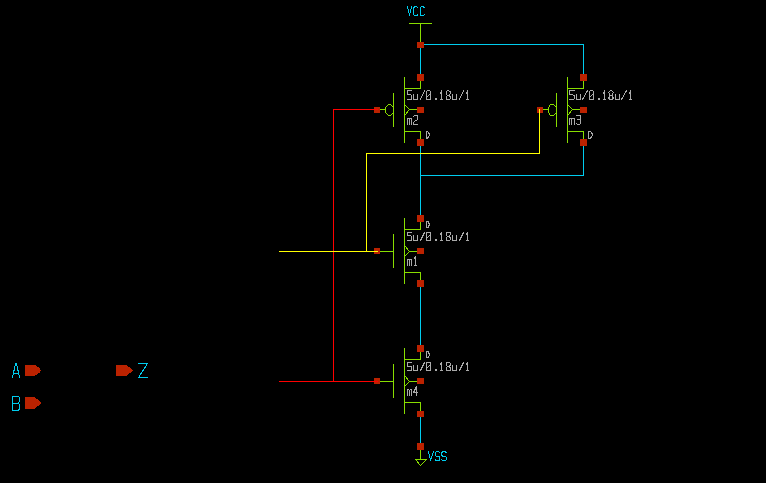we still need to connect the body terminals of the mos transistors. One possibility is to hookup the two upper pmos transistor terminals to VCC with wires, and the two bottom nmos terminals to VSS with wires, but just to show different design styles i am planning to use ''by name'' connection with labels. So place a wire label devices/lab_pin.sym and use 4 instances of it to name the 4 body terminals. Remember, while moving (select and press the 'm' key) you can flip/rotate using the R/F keys.
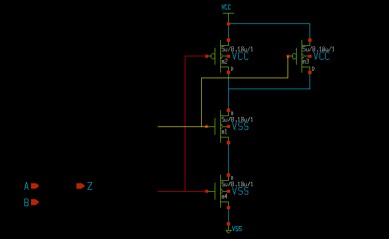Finally we must connect the input and output port connectors, and to complete the gate schematic we decide to use W=8u for the pmos transistors. Select both the pmos devices and press the edit proprty 'q' key; modify from 5u (default) to 8u.
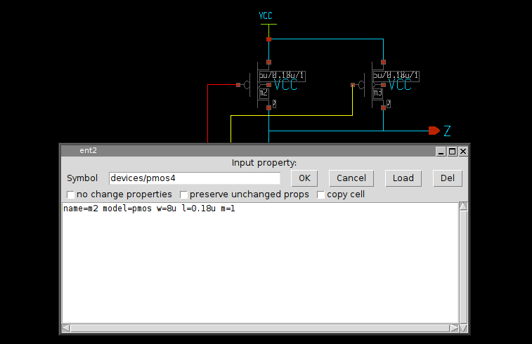
Now do a Save as operation, save it for example in mylib/nand2.sch.
To make the schematic nicer we also add the title component. This component is not netlisted but is
useful, it reports the modification date and the author. Place the devices/title.sym
component. The NAND gate is completed! (below picture also with grid, normally disabled in pictures
to make image sizes smaller).
Normally a cmos gate like the one used in this example is used as a building block (among many others) for bigger circuits, therefore we need to enclose the schematic view above in a symbol representation.
Automatic symbol creation
XSCHEM has the ability to automatically generate a symbol view given the schematic view. Just press the 'a' bindkey in the drawing area of the nand2 gate.
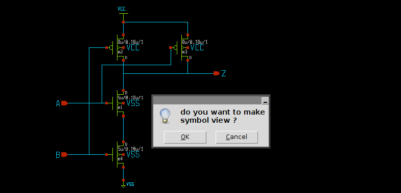After pressing 'OK' a mylib/nand2.sym file is generated. try opening it (File->Open):
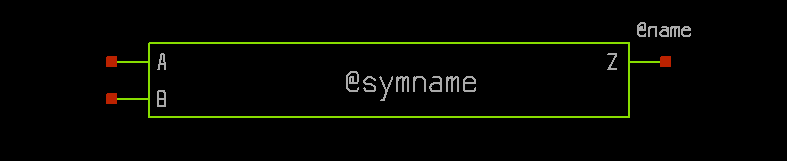As you can see a symbolic view of the gate has been automatically created using the information in the schematic view (specifically, the input/output pins). Now, this graphic is not really looking like a nand gate, so we may wish to edit it to make it look better. Delete (by selecting and pressing the Delete key) all the green lines, keep the red pins, the pin labels and the @symname and @name texts, then draw a nand shape like in the following picture. To allow you to draw small segments you may need to reduce the snap factor (menu View->Half snap thresholf) remember to reset the snap factor to its default setting when done.
This completes the nand2 component. It is now ready to be placed in a schematic. Open a test schematic (for example mylib/test.sch (remember to save the nand2.sym you have just created), press the Insert key and locate the mylib/nand2.sym symbol. Then insert devices/lab_pin.sym components and place wires to connect some nodes to the newly instantiated nand2 component:
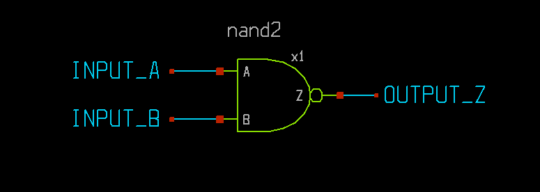This is now a valid circuit. Let's test it by extracting the SPICE netlist. Enable the showing of netlist window (Options -> Show netlist win, or 'A' key). Now extract the netlist (Netlist button on the right side of the menu bar, or 'N' key). the SPICE netlist will be shown.
**.subckt test x1 OUTPUT_Z INPUT_A INPUT_B nand2 **** begin user architecture code **** end user architecture code **.ends * expanding symbol: mylib/nand2 # of pins=3 .subckt nand2 Z A B *.ipin A *.opin Z *.ipin B m1 Z A net1 VSS nmos w=5u l=0.18u m=1 m2 Z B VCC VCC pmos w=8u l=0.18u m=1 m3 Z A VCC VCC pmos w=8u l=0.18u m=1 m4 net1 B VSS VSS nmos w=5u l=0.18u m=1 **** begin user architecture code **** end user architecture code .ends .GLOBAL VCC .GLOBAL VSS .end
This is an example of a hierarchical circuit. The nand2 is a symbol view of another lower level schematic. We may place multiple times the nand2 symbol to create more complex circuits.
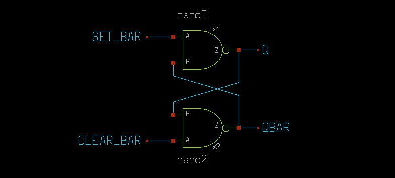By selecting one of the nand2 gates and pressing the 'e' key or menu Edit -> Push schematic we can 'descend' into it and navigate through the various hierarchies. Pressing <ctrl>e returns back to the upper level.
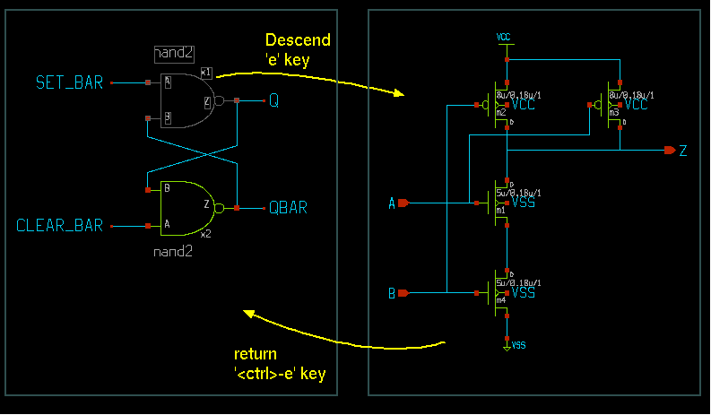This is the corresponding netlist:
**.subckt test x1 Q SET_BAR QBAR nand2 x2 QBAR CLEAR_BAR Q nand2 **** begin user architecture code **** end user architecture code **.ends * expanding symbol: mylib/nand2 # of pins=3 .subckt nand2 Z A B *.ipin A *.opin Z *.ipin B m1 Z A net1 VSS nmos w=5u l=0.18u m=1 m2 Z B VCC VCC pmos w=8u l=0.18u m=1 m3 Z A VCC VCC pmos w=8u l=0.18u m=1 m4 net1 B VSS VSS nmos w=5u l=0.18u m=1 **** begin user architecture code **** end user architecture code .ends .GLOBAL VCC .GLOBAL VSS .end
The advantage of using hierarchy in circuits is the same as using functions in programming languages; avoid drawing many repetitive blocks. Also the netlist file will be much smaller.